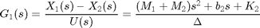
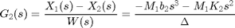
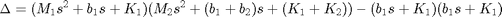
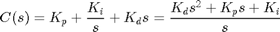
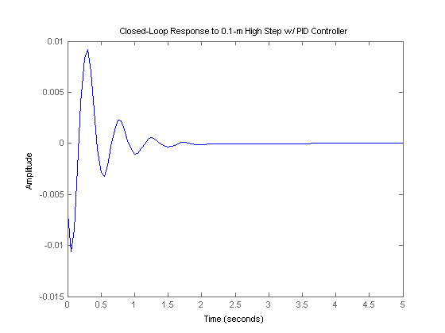
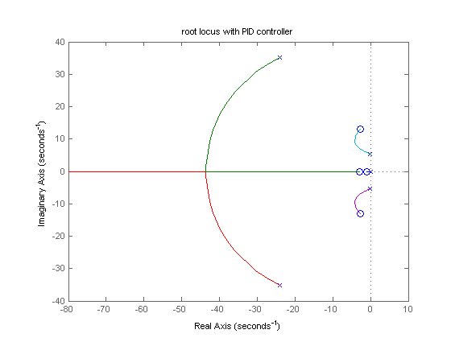
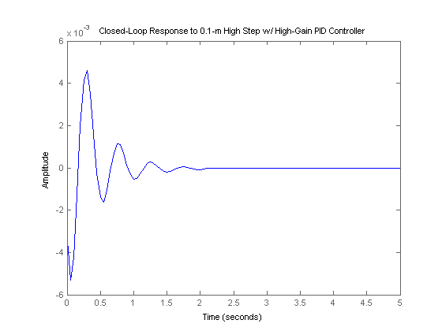
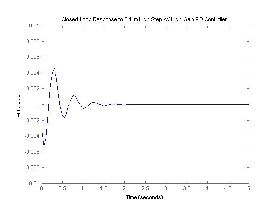

Suspension: PID Controller Design
Key MATLAB commands used in this tutorial are: tf , feedback , step , rlocus
Contents
From the main problem, the dynamic equations in transfer function form are the following:
(1)
(2)
where,
(3)
and the system schematic is the following where F(s)G1(s) = G2(s).

For the original problem and the derivation of the above equations and schematic, please refer to the Suspension: System Modeling page.
We want to design a feedback controller so that when the road disturbance (W) is simulated by a unit step input, the output (X1-X2) has a settling time less than 5 seconds and an overshoot less than 5%. For example, when the bus runs onto a 10 cm high step, the bus body will oscillate within a range of +/- 5 mm and will stop oscillating within 5 seconds.
The system model can be represented in MATLAB by creating a new m-file and entering the following commands (refer to the main problem for the details of getting those commands).
m1 = 2500; m2 = 320; k1 = 80000; k2 = 500000; b1 = 350; b2 = 15020; nump=[(m1+m2) b2 k2]; denp=[(m1*m2) (m1*(b1+b2))+(m2*b1) (m1*(k1+k2))+(m2*k1)+(b1*b2) (b1*k2)+(b2*k1) k1*k2]; G1=tf(nump,denp); num1=[-(m1*b2) -(m1*k2) 0 0]; den1=[(m1*m2) (m1*(b1+b2))+(m2*b1) (m1*(k1+k2))+(m2*k1)+(b1*b2) (b1*k2)+(b2*k1) k1*k2]; G2=tf(num1,den1); numf=num1; denf=nump; F=tf(numf,denf);
Adding a PID controller
Recall that the transfer function for a PID controller is:
(4)
where Kp is the proportional gain, Ki is the integral gain, and Kd is the derivative gain. Let's assume that we will need all three of these gains in our controller. To begin, we might start with guessing a gain for each: Kp=208025, Ki=832100 and Kd=624075. This can be implemented into MATLAB by adding the following code into your m-file:
Kd = 208025; Kp = 832100; Ki = 624075; C = pid(Kp,Ki,Kd);
Now let's simulate the response of the system (the distance X1-X2) to a step disturbance on the road. From the schematic above we can find the transfer function from the road disturbance W to the output(X1-X2), and simulate:
sys_cl=F*feedback(F*G1,C);
Plotting the closed-loop response
Now we have created the closed-loop transfer function in MATLAB that will represent the plant, the disturbance, as well as the controller. Let's see what the closed-loop step response for this system looks like before we begin the control process. Keep in mind that we are going to use a 0.1 m high step as our disturbance, to simulate this, all we need to do is to multiply sys_cl by 0.1. Add the following code your m-file. You should see the response (X1-X2) to a step W like this:
t=0:0.05:5;
step(0.1*sys_cl,t)
title('Closed-Loop Response to 0.1-m High Step w/ PID Controller')
 From the graph, the percent overshoot is 9mm, which is larger than the 5mm requirement, but the settling time is satisfied, less than 5 seconds. To choose the proper gain that yields reasonable output from the beginning, we start with choosing a pole and two zeros for PID controller. A pole of this controller must be at zero and one of the zeros has to be very close to the pole at the origin, at 1. The other zero, we will put further from the first zero, at 3, actually we can adjust the second-zero's position to get the system to fulfill the requirement. Add the following command in the m-file, so you can adjust the second-zero's location and choose the gain to have a rough idea what gain you should use for Kd, Kp, and Ki.
z1=1;
z2=3;
p1=0;
C = ((s+z1)*(s+z2))/(s+p1);
rlocus(C*G1)
title('root locus with PID controller')
 Add the code [k,poles]=rlocfind(C*G1) onto the end of your m-file to help you choose a specific loop gain. After running in the command window, go to the root locus plot and select a point near those indicated by the cross marks on the plot below.

After doing this, you should see the following output in the MATLAB command window.
Select a point in the graphics window
selected_point =
-4.3957 + 9.3168i
k =
4.7992e+04
poles =
1.0e+02 *
-2.0116
-0.0415 + 0.0932i
-0.0415 - 0.0932i
-0.0729
-0.0059
Note that the values returned in your MATLAB command window may not be exactly the same, but should at least have the same order of magnitude.
We will explain the root locus method in more detail in the Suspension: Root Locus Controller Design page.
Choosing the gains for the PID controller
Now that we have the closed-loop transfer function, controlling the system is simply a matter of tuning the Kd, Kp, and Ki gains. From the figure above, we can see that the system has larger damping than required, but the settling time is very short. This response still doesn't satisfy the 5% overshoot requirement. As mentioned before, this can be rectified by adjusting the Kp, Ki and Kd gains to obtain a better response. Let's increase Kp, Ki, and KD by a factor of 2 to see what will happen. Go back to your m-file and multiply Kp, Ki, Kd by 2 and then rerun the program, you should get the following plot.
Kd=2*Kd;
Kp=2*Kp;
Ki=2*Ki;
C=pid(Kp,Ki,Kd);
sys_cl=F*feedback(F*G1,C);
step(0.1*sys_cl,t)
title('Closed-Loop Response to 0.1-m High Step w/ High-Gain PID Controller')
 To compare this graph with the graph of low-gain PID controller, you can change the axis:
axis([0 5 -.01 .01])
Now we see that the percent overshoot and settling time meet the requirements of the system. The percent overshoot is about 5% of the input's amplitude and settling time is 2 seconds which is less than the 5 second requirement.
For this problem, it turns out that the PID design method adequately controls the system. This can been seen by looking at the root locus plot. Such a task can be achieved by simply changing only the gains of a PID controller. Feel free to play around with all three of the parameters, Kp, Ki, and Kd, as we suggested, but you will most likely get the response to have either a large percent overshoot or a long settling time.